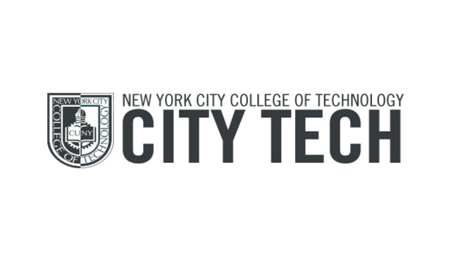

Design @ CUNY
Find a Design Program
Search by:
A.A.S. - Industrial Design
Industrial Design
The Industrial Design program provides students a foundation experience in the necessary skills to begin a career in Computer Assisted Design (CAD), Model making, Product Design and Fabrication or transfer to a four-year institution.

A.A.S. - Industrial Design Technology
A.A.S. - Industrial Design Technology
Industrial Design
The Industrial Design Technology (IND) program is designed to provide students with a wide variety of skills enabling them to utilize a number of 2D, 3D and animation/simulation software packages in several diverse fields.